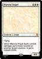
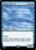
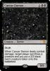
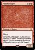
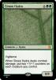
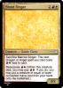

Blue (1 card)
-

Marrow Angel
 Creature — Angel
Creature — Angel
 Flying
Flying
When Marrow Angel deals combat damage, put a bone counter on another target creature. It gains indestructible.
4/4
1/6
Black (1 card)
-

Spinal Sphinx
 Creature — Sphinx
Flying
Creature — Sphinx
Flying
When Spinal Sphinx deals combat damage, scry 2, then draw a card.
6/6
2/6
Red (1 card)
-

Cancer Demon
 Creature — Demon
Skulk
Creature — Demon
Skulk
When Cancer Demon deals combat damage, target player sacrifices a creature and you put a 2/2 black Germ creature token onto the battlefield.
5/5
3/6
Green (1 card)
-

Heart Dragon
 Creature — Dragon
Flying
Creature — Dragon
Flying
When Heart Dragon deals combat damage, it deals 4 damage divided as you choose among any number of target creatures and/or players.
7/7
4/6
Multicolor (1 card)
-

Sinew Hydra
 Creature — Hydra
Vigilance
Creature — Hydra
Vigilance
When Sinew Hydra deals combat damage, put two +1/+1 counters on each creature you control.
8/8
5/6
Hybrids (1 card)
-

Blood Singer
 Creature — Goblin Cleric
Sacrifice Marrow Singer: The next Dragon or Angel spell you cast costs less to cast.
Creature — Goblin Cleric
Sacrifice Marrow Singer: The next Dragon or Angel spell you cast costs less to cast.
Repurpose (When this creature dies, you may pay . If you do, you may put a creature of equal or lower converted mana cost from your hand onto the battlefield.)
3/2
6/6
{kind=link}
{kind=link}
{kind=link}
{kind=link}
{kind=link}
{kind=link}